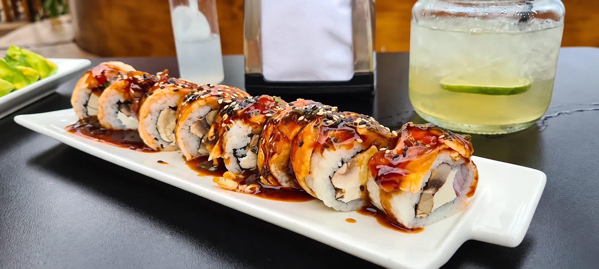
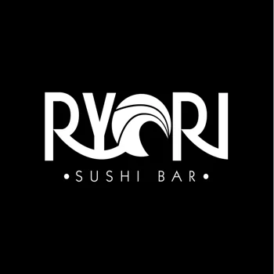
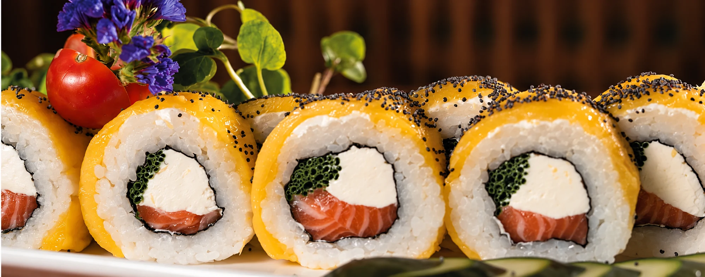
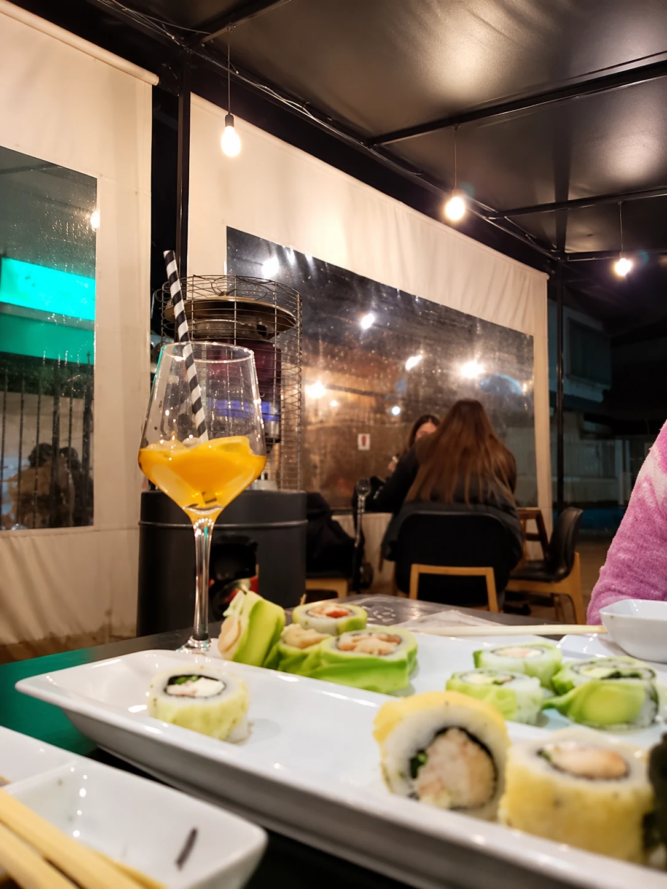

Sushi
Rolls de la casa
Avocado, tempura, acevichados y combinaciones para volver por más.
Ver los rolls

Divina Providencia 375, Llolleo
Rolls, tablas para compartir y burgers. Retira en el local, pide delivery o escríbenos.
Ver la carta con precios
El local
En el centro de Llolleo, Ryori reúne sushi, burgers y bar en un solo lugar. Puedes comer aquí o pedir para llevar.
Instagram @ryorisushi_llolleoTres formas de pedir
Eliges en la carta online, pagas al retirar en efectivo o Redcompra.
Retirar en el localTe lo llevamos a través de Uber Eats.
DeliveryPregúntanos por disponibilidad, pedidos grandes o lo que necesites.
WhatsAppSan Antonio, Región de Valparaíso.
En feriados, escríbenos por WhatsApp para confirmar.